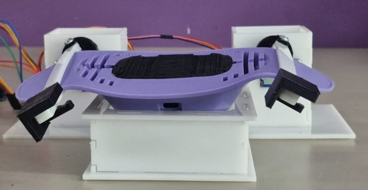

Test Fixtures
Fixtures used to validate device performance, durability, electrical behavior, and repeatability during engineering verification or development testing.
A collection of test and production fixtures developed to improve validation, repeatability, operator execution, and manufacturing reliability.
Select a fixture category or open one of the available fixture case studies below.
Fixtures used to validate device performance, durability, electrical behavior, and repeatability during engineering verification or development testing.
Fixtures designed to support production workflows, reduce operator variability, improve assembly consistency, and make pass/fail execution easier on the line.
Case studies for fixtures created to evaluate device performance and reliability.

Automated fixture that reproduces cyclic bending to validate the mechanical durability of a wearable therapy device.

Fixture for mounting a scale on a Mark-10 frame to measure thread cutting force in a repeatable setup.
Case studies for fixtures created to support packaging, assembly, inspection, and manufacturing execution.

Fixture for positioning medical trays and aligning Tyvek sheets before heat sealing.

Fixture for aligning two medical device components before bonding to reduce scrap and operator-dependent variation.